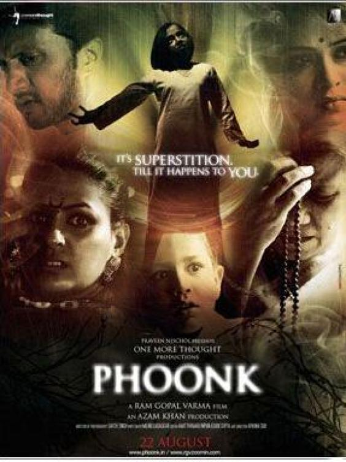
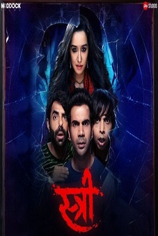

5: Phoonk
Ratings : 🌟 4.0
Genre :DramaHorrorMystery
Release Date : 22 August 2008
Watch-Time : 1h 50min.
Director : Ram Gopal Varma
Starring : Sudeep, Amruta Khanvilkar, Ahsaas Channa, Kenny Desai, Ashwini Kalsekarm, Zakir Hussain
Box-Office : ₹10 crores
Storyline:
Wealthy Mumbai-based Rajiv while carrying out excavation comes across an ancient statute of Bhagwan Shri Ganpati. His workers request him to build a small temple, but he refuses although his family, including his mother and wife, Arati, & maid, Laxmi, worship a variety of Hindu Deities including Satyanarayan Devji and Bhagwan Shri Hanuman. When Rajiv finds that two of his associates, Anshuman and Madhu, have embezzled money, he humiliates and fires them on the spot. Madhu decides to avenge this humiliation by putting Rajiv's daughter, Raksha, under a black magic spell. The family calls in Dr. Pandey - who does not find anything physically wrong with her but hastily changes his mind after re-examining her at their residence, and calls in Psychiatrist Seema Walke. Arati and her mother-in-law are convinced that Raksha is possessed and call in a Tantri, but Rajiv decides to admit her in a hospital under the care of the aforementioned doctors.
4: Bulbbul

Ratings : 🌟 6.5
Genre : HorrorDramaMystery
Release Date : 24 June 2020
Watch-Time : 1h 34min.
Director : Anvita Dutt
Starring : Tripti Dimri, Avinash Tiwary, Paoli Dam, Rahul Bose, Parambrata Chatterjee
Box-Office : ?
Storyline:
The story starts in the nineteenth century in Bengal Presidency. Bulbbul is married off to Indranil, the Bado Thakur (Elder Lord), when she is barely five years old. She is close with Satya, Indranil's youngest brother, who is closer to her age. Bulbbul and Satya grow up together, playing and telling each other stories of a demon woman ("chudail"). Indranil's mentally challenged twin brother Mahender shows a strange appeal toward Bulbbul.
Twenty years later, Satya returns home from London. In the interim Mahender was killed in what was believed to be a chudail's attack. His widow Binodini now lives in an outhouse. Indranil has left the village and Bulbbul has taken over his responsibilities. The village doctor, Sudip, regularly visits to check Bulbbul's feet.
3: Pari

Ratings : 🌟 6.6
Genre : FantasyHorrorMystery
Release Date : 2 March 2018
Watch-Time : 2h 16min.
Director : Prosit Roy
Starring : Anushka Sharma, Parambrata Chatterjee, Rajat Kapoor, Ritabhari Chakraborty, Mansi Multani
Box-Office : ₹40.41 crore
Storyline:
On a rainy day, Arnab and his parents are traveling in a car after meeting Piyali regarding his marriage. Their car hits a strange looking old woman who dies on the spot. Arnab and cops locate her house where her daughter Ruksahana is chained who doesn't seem to be normal and is disconnected from outside world. After performing last rites of her mother Arnab leaves Ruksahana back to her house. But Professor Qasim Ali comes to capture her with his men who know about her identity. But she manages to escape and reach Arnab's place who shelters her not knowing her true identity.
2: Stree
Ratings : 🌟 7.6
Genre : ComedyHorror
Release Date : 31 August 2018
Watch-Time : 2h 8min.
Director : Amar Kaushik
Starring : Shraddha Kapoor, Rajkummar Rao, Pankaj Tripathi, Aparshakti Khurana, Abhishek Banerjee
Box-Office : ₹180.76 crore
Storyline:
Chanderi village is haunted for years by a witch whose called as Stree. She abducts men in dark leaving their clothes behind during the four day annual festival. Vicky young and handsome village tailor disbelief's these stories. He meets an Unnamed women whose in the village every year during the festival. Vicky and the women start getting close to each other. But his friends Jaana and Bitu get suspicious that till date only Vicky has seen the women and believe that she could be Stree.
1.1: Tumbbad
Ratings : 🌟 8.3
Genre : FantasyDramaHorror
Release Date : 12 October 2018
Watch-Time : 1h 44min.
Director : Prashanth Neel
Starring : Yash, Srinidhi Shetty, Ananth Nag, Ramachandra Raju, Achyuth Kumar
Box-Office : ₹250 crore
Storyline:
Set in Tumbbad in the 1920s, the story revolves around the three generations of a family facing the consequences when they build a temple for the first-born of a goddess, named Hastar--he who must not be worshiped. Hastar is a terrible entity who can curse a person yet also can grant gold coins. And the story put emphasis on human nature and the never ending greed. The myth of Hastar is, when the Goddess of Prosperity created the world she gave birth to Hastar followed by 16 Crore Gods and Goddesses. Hastar being her first born was her favorite child, but Hastar was very greedy. When the Goddess of Prosperity offered Hastar the ownership of all the gold in the universe or all the food, he took the gold as well as tried to take over the food in his greed fighting with his brothers and sisters. The 16 crore gods and goddesses overpowered Hastar and when they tried to kill him, the Goddess of Prosperity intervened and begged for his life.